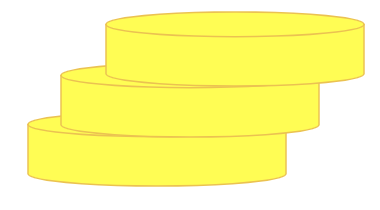

<html>
    <!-- This file contains the Artwork Selection Experiment. 
        It declares a number of constants, sets up the experiment, and 
        adds trials to timeline. 
        The trials are defined in trialdefs.js. 
        The functions are defined in func-defs files: 
            - backend-funcs.js deals with sending/receiving responses
            - get-data-funcs.js deals with getting/using data saved by trials
            - player-funcs.js contains functions updating or creating players
            - response-string-funcs.js contains functions that build stimulus strings.
    -->
    <head>
        <title>Artwork Selection Experiment</title> 
        <script src="jspsych-6.2.0/jspsych.js"></script>
        <script src="jspsych-6.2.0/plugins/jspsych-html-keyboard-response.js"> </script>
        <script src="jspsych-6.2.0/plugins/jspsych-multi-image-button-response.js"></script>
        <script src="jspsych-6.2.0/plugins/jspsych-html-button-response.js"></script>
        <script src = "./jspsych-waiting.js"></script>
       <script src = "./trialdefs.js"></script>
       <script src = "func-defs/player-funcs.js"></script>
       <script src = "func-defs/response-string-funcs.js"></script>
       <script src = "func-defs/backend-funcs.js"></script>
       <script src = "func-defs/get-data-funcs.js"></script> 
       <link href="jspsych-6.2.0/css/jspsych.css" rel="stylesheet" type="text/css">
       <link href="./additional-styling.css" rel="stylesheet" type="text/css">

    </head>

    <body>
        <div id = "jspsych-target" style = "width:100%; height: 95%"> </div>
        <div class = "total-player-money" style = "margin: auto">
            <!-- <div id = "money-img" style = "height:5%"> 
                </img>
            </div> -->
            <div id = "money-amount" style = "height: 5%; text-align:center; font-family: Arial, Helvetica, sans-serif; font-size:large"> </div>
        </div>
    </body>

    <script>
    /* ----------------------------------------------------------*/ 
    /* constants that will be used later defined here:           */ 
    /* note that functions are defined in funcdefs.js            */    
    /* ----------------------------------------------------------*/             
        const numImages = 5; // the number of artworks displayed
        const payToCopy = 2; // amount you need to pay someone to copy their choices
        const startAmount = 20; // amount of money you start with
        const rewardForCorrect = 10; // amount you get when you choose the right answer

        const numDecisions = 2; // to skip last "choice" screen, rough solution
        let offlineMode = true; 


        /* placeholders */  
        const img1 = "images/img1.jpg";
        const img2 = 'images/img2.jpg';
        const img3 = 'images/img3.jpg';
        const img4 = 'images/img4.jpg';
        const img5 = 'images/img5.jpg';
    
    /* ------------------------------------------------------------ */ 
    /* global variables (not const)                                 */     
    /* ------------------------------------------------------------ */
        let bIsCopying = false; // whether the player is copying in this round
        let iPlayerCopying = 0; // which player they are copying
        let numExecutions = 0; // number of rounds thru timeline 
        let numPlayers = 4; // number of other players - adjusted if live

        
        let timeline = []; // timeline for experiment 
        let player; // your self; will be defined after consent
        let dummyPlayers = []; // array to hold other players; defined after consent
        let d_choices = []; // default value for other player choices
        
    /* ------------------------------------------------------------ */ 
    /* define trials on timeline                                    */     
    /* ------------------------------------------------------------ */ 

        /* add consent and experiment setup trial*/ 
        timeline.push({timeline: consentTrial});

        /* define welcome message as a trial */
        let welcome = {
            type: "html-keyboard-response",
            stimulus: `Welcome to the experiment. <br> </br> You will begin with $${startAmount}, as will other players. <br> </br> Press any key to begin.`
        }; 
        timeline.push(welcome); 

        /* define art_decision_procedure as three trials: art display and selection, displaying player results, and choice to copy */ 
        let art_decision_procedure = { 
            timeline: [
                // if not copying: display art and allow selection; update money of all players
                {
                    timeline: artDisplaySelection, 
                    conditional_function: function() { 
                        // return true when the player will select 
                        return !bIsCopying;  
                    }, 
                },
                // if copying: display art and disallow selection; update money of all players 
                {
                    timeline: artDisplayCopy, 
                    conditional_function: function() { 
                        return bIsCopying; // do NOT recalculate this value - it will use the wrong button press
                    }  
                },
                // display player results and correctness (including if copying)
                {
                    timeline: [displaySelfResults]
                },
                // display other player results and choose to copy; update money, bIsCopying iPlayerCopying if copying
                {
                    timeline: chooseToCopy, 
                    // skips last execution (before end screen)
                    conditional_function: function() { 
                        return (numExecutions < numDecisions);
                    } 
                }
            ],
            timeline_variables: [
                {correct_choice: 0, img_array: [img1, img2, img3, img4, img5], dummy_choices: d_choices},
                {correct_choice: 1, img_array: [img5, img4, img3, img2, img1], dummy_choices: d_choices},
                {correct_choice: 2, img_array: [img1, img2, img3, img4, img5], dummy_choices: d_choices}
            ],
        }
        timeline.push(art_decision_procedure);

        /* End of experiment page as trial */ 
        let goodbye = { 
            type: "html-keyboard-response", 
            stimulus: "Thanks for participating. The experiment is over. You can close the browser window.",
            choices: jsPsych.NO_KEYS, 
            trial_duration: 2000 // Remove this when not debugging (need this line for displayData())
        };
        timeline.push(goodbye);  

        /* start the experiment */ 
        jsPsych.init({
            timeline: timeline, 
            display_element: 'jspsych-target',
            // For debugging: 
            on_finish: function () {
                console.log("done"); 
                jsPsych.data.displayData();
            },
            show_progress_bar: true 
        }); 
        
    </script>
</html>